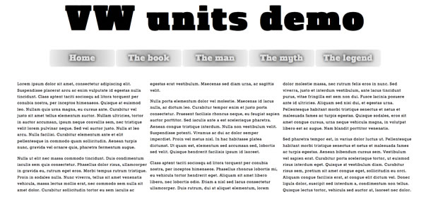
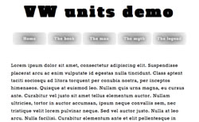

CSS viewport units: vw, vh, vmin and vmax
Introduction
The CSS Values and Units Module Level 3 defines a whole host of new units that can be used in various contexts, for example seconds and milliseconds, degrees and radians, and rems for sizing things relative to the font-size on the root element. One type of units that has not been so widely discussed is viewport units, for sizing things relative to the viewport size, a brilliant proposition for responsive design. They are currently supported by a reasonable variety of browsers (Opera 15, Firefox, Chrome, Blackberry 10, IE10, iOS), and allow for a lot of interesting new possibilities. Let's explore.
Viewport unit syntax
In brief, the available new units are as follows:
1vw: 1% of viewport width1vh: 1% of viewport height1vmin:1vwor1vh, whatever is smallest1vmax:1vwor1vh, whatever is largest
Note that IE9 supports the old syntax for vmin — vm, but not for font-size. Webkit-based browsers that support it do so, but not dynamically — refresh the browser window if you see no change upon resizing the viewport.
I have created a simple viewport demo that includes a main heading, a dummy navigation menu, and a simple article of content split into columns using column-width from the CSS Multi-column Layout Module (Figure 1).
article {
-webkit-column-width: 40rem;
-moz-column-width: 40rem;
column-width: 40rem;
}
article p {
-webkit-break-inside: avoid-column;
-moz-break-inside: avoid-column;
break-inside: avoid-column;
}
article p:first-child {
margin-top: 0;
}If you load this up in a supporting browser and try adjusting the viewport width, you'll see that the main heading and navigation menu's text sizes adjust accordingly to keep them fitting inside the design (Figure 2)! This is very cool, and works because they are sized relative to the viewport width — when it changes, they change.

Figure 1: A simple layout for our vw unit example.

Figure 2: When the viewport width is decreased, the heading and nav items decrease text size accordingly.
The code used for this is as follows:
h1 {
font-size: 6vw;
}
nav li a {
font-size: 1.5vw;
}This allows you to natively implement responsive headings in a similar fashion to Paravel's excellent jQuery plugin fittext.js (although with less flexibility; fittext automatically expands headings so they will fill up their containers, so they will still work if the amount of text in the headings changes). But think about it — I have kept things simple here, but you could size all your UI features with these units, resulting in the ultimate liquid layout that always stays relative to the viewport size.
According to caniuse.com, at the time of writing support for viewport units in today’s browsers ran at about 55%. So you should think carefully when using them in your production projects. You could use fittext.js, consider using a Polyfill (vminpoly works ok, but is in need of improvements) or use a fallback like so (bearing in mind that old IE doesn’t support rem units either):
h1 {
font-size: 100px;
font-size: 10rem;
font-size: 6vw;
}You should be careful about overusing vw units: I especially wouldn't recommend it for body copy, as you could too easily end up with text that is too small to read easily on some devices.
Summary
That's it! I hope you think viewport units are as cool as I do, and I'll look forward to seeing what you create with them. Well, when I say viewport units are cool — I am pretty much just talking about vw and vh; I can't think of a specific use case for vmin or vmax. If you have got one, I'd love to hear from you.
Chris Mills

Chris Mills is a web technologist, open standards evangelist and education agitator, currently working at Opera Software in the developer relations team. He spends most of his time writing articles about web standards for dev.opera.com and other publications (such as .net mag and A List Apart), giving talks at universities and industry conferences, and lobbying universities to improve their web education courses. He believes that education is the answer to everything, but in particular he is passionate about using education to improve the overall content quality, accessibility, usability and future-viability of the Web.
He is the creator of the Opera Web standards curriculum, contributor to the WaSP InterACT project, and coauthor of InterACT with web standards: A Holistic Approach to Web Design. In August 2011, he also accepted the position of co-chair of the newly-formed Web Education Community Group.
Outside work he is a heavy metal drummer, proud father of three and lover of good beer.
This article is licensed under a Creative Commons Attribution 3.0 Unported license.
Comments
No new comments accepted.